Licenziamento per malattia: quando è illegittimo
La malattia, di per sé, non è una giusta causa di licenziamento. Finché non è superato il periodo di comporto, l'assenza del lavoratore è protetta dalla legge. Capire la differenza…

Maltrattamenti in famiglia: la gelosia non giustifica le aggressioni
Un recente orientamento della Corte di Cassazione penale torna sul reato di maltrattamenti in famiglia (art. 572 c.p.), chiarendo che la gelosia della vittima o una sua condotta pr…
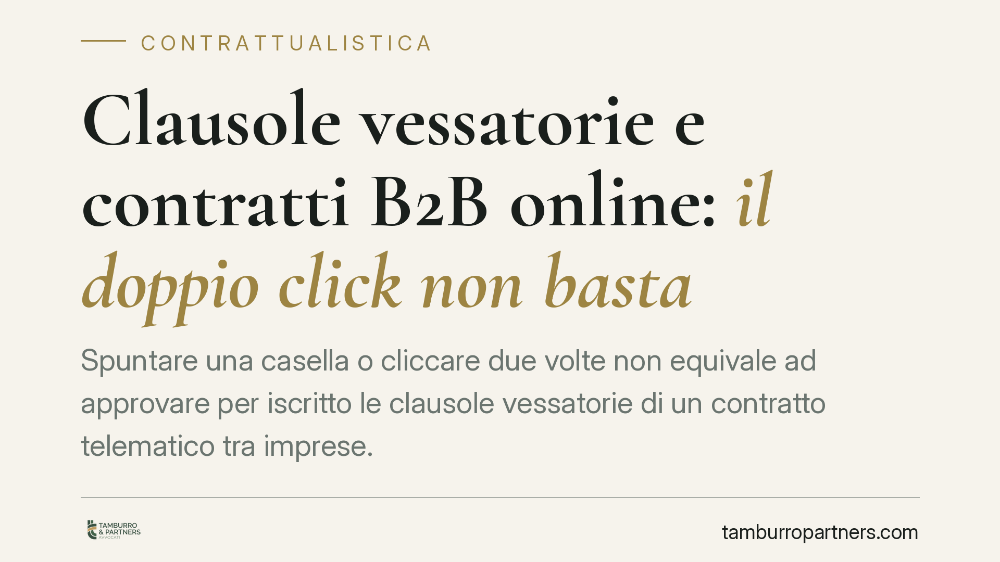
Clausole vessatorie e contratti B2B online: il doppio click non basta
Spuntare una casella o cliccare due volte non equivale ad approvare per iscritto le clausole vessatorie di un contratto telematico tra imprese. Lo ha ribadito una recente ordinanza…
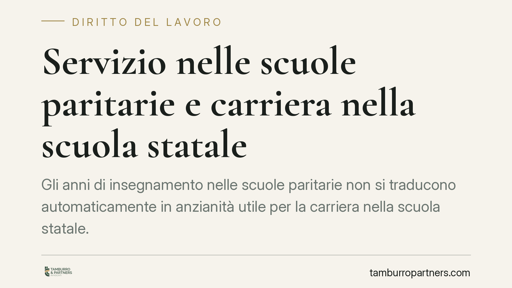
Servizio nelle scuole paritarie e carriera nella scuola statale
Gli anni di insegnamento nelle scuole paritarie non si traducono automaticamente in anzianità utile per la carriera nella scuola statale. La distinzione tra rapporto di pubblico im…

Liberazione anticipata e sospensione dell'ordine di esecuzione: il nodo del cumulo
Quando una condanna cumula reati ostativi e reati comuni, il punto critico è stabilire la pena da espiare ai fini della sospensione dell'ordine di esecuzione. Il tema ruota intorno…

Revolut in amministrazione giudiziaria: cosa cambia per chi ha un conto
Secondo quanto riportato dalla stampa, il Tribunale di Milano avrebbe disposto l'amministrazione giudiziaria della succursale italiana di Revolut per presunte carenze nei presidi a…
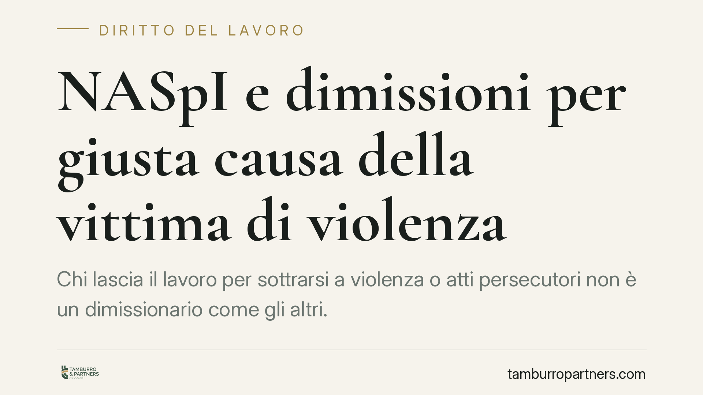
NASpI e dimissioni per giusta causa della vittima di violenza
Chi lascia il lavoro per sottrarsi a violenza o atti persecutori non è un dimissionario come gli altri. La prassi INPS equipara queste dimissioni a quelle per giusta causa, con sta…
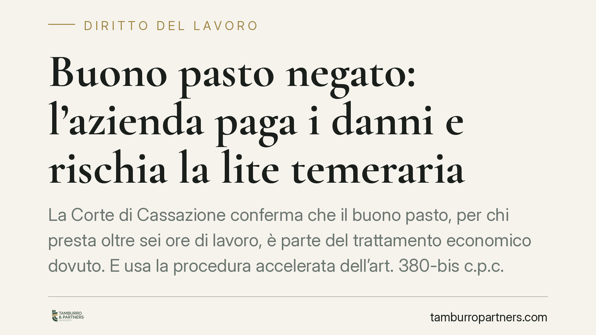
Buono pasto negato: l'azienda paga i danni e rischia la lite temeraria
La Corte di Cassazione conferma che il buono pasto, per chi presta oltre sei ore di lavoro, è parte del trattamento economico dovuto. E usa la procedura accelerata dell'art. 380-bi…
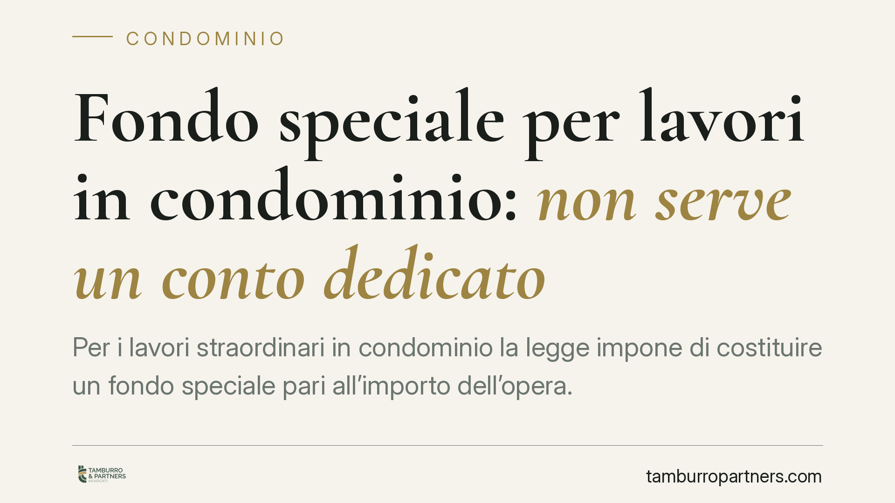
Fondo speciale per lavori in condominio: non serve un conto dedicato
Per i lavori straordinari in condominio la legge impone di costituire un fondo speciale pari all'importo dell'opera. Una pronuncia del Tribunale di Napoli chiarisce che non occorre…
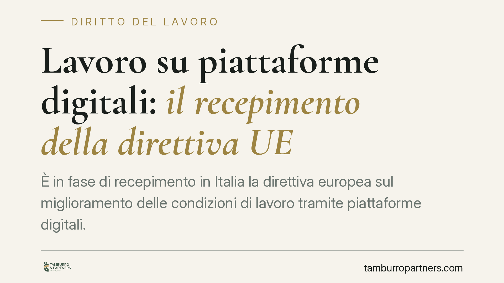
Lavoro su piattaforme digitali: il recepimento della direttiva UE
È in fase di recepimento in Italia la direttiva europea sul miglioramento delle condizioni di lavoro tramite piattaforme digitali. Il provvedimento introduce una presunzione legale…
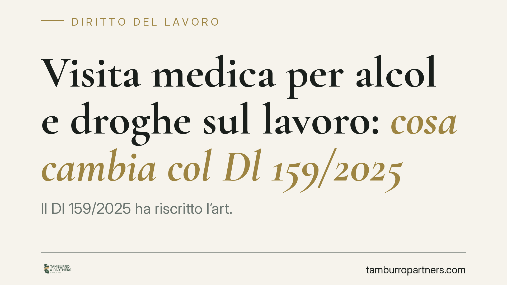
Visita medica per alcol e droghe sul lavoro: cosa cambia col Dl 159/2025
Il Dl 159/2025 ha riscritto l'art. 41 del Testo Unico Sicurezza, aprendo alla visita medica immediata per i lavoratori addetti a mansioni ad elevato rischio sospettati di essere so…
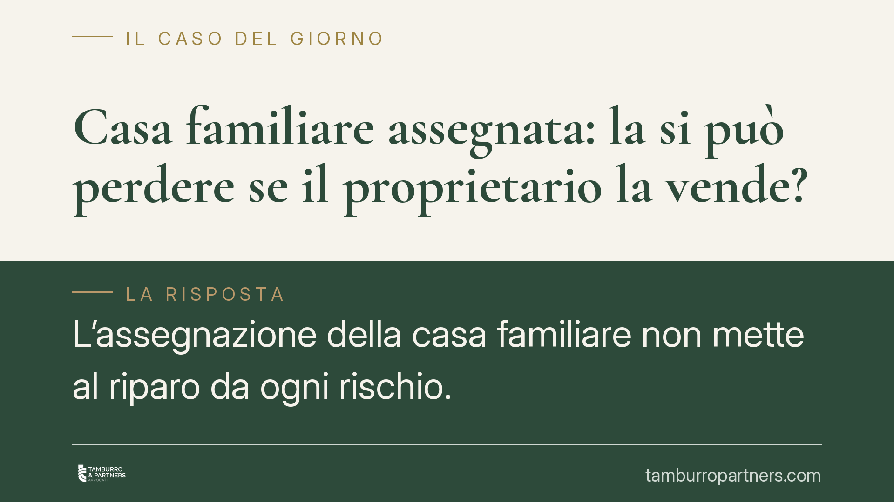
Casa familiare assegnata: la si può perdere se il proprietario la vende?
L'assegnazione della casa familiare non mette al riparo da ogni rischio. Se il provvedimento non viene trascritto, è opponibile al terzo che compra l'immobile solo per nove anni da…
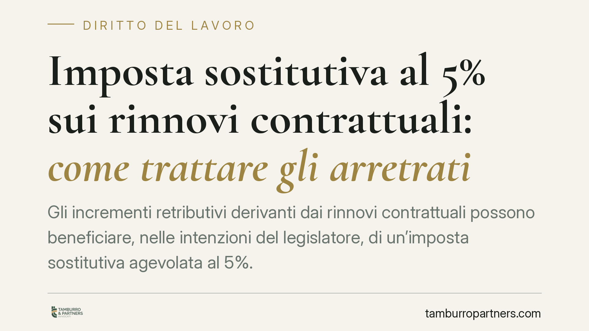
Imposta sostitutiva al 5% sui rinnovi contrattuali: come trattare gli arretrati
Gli incrementi retributivi derivanti dai rinnovi contrattuali possono beneficiare, nelle intenzioni del legislatore, di un'imposta sostitutiva agevolata al 5%. Il nodo pratico rigu…
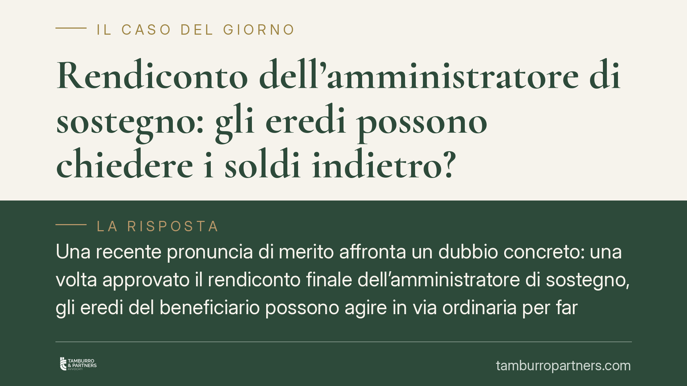
Rendiconto dell'amministratore di sostegno: gli eredi possono chiedere i soldi indietro?
Una recente pronuncia di merito affronta un dubbio concreto: una volta approvato il rendiconto finale dell'amministratore di sostegno, gli eredi del beneficiario possono agire in v…
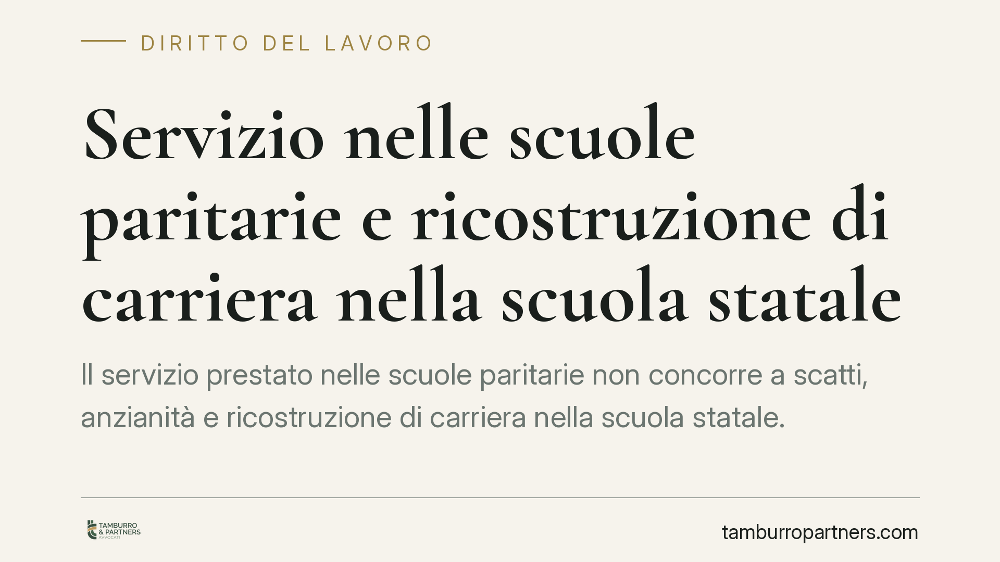
Servizio nelle scuole paritarie e ricostruzione di carriera nella scuola statale
Il servizio prestato nelle scuole paritarie non concorre a scatti, anzianità e ricostruzione di carriera nella scuola statale. È la lettura che emerge dall'orientamento di legittim…
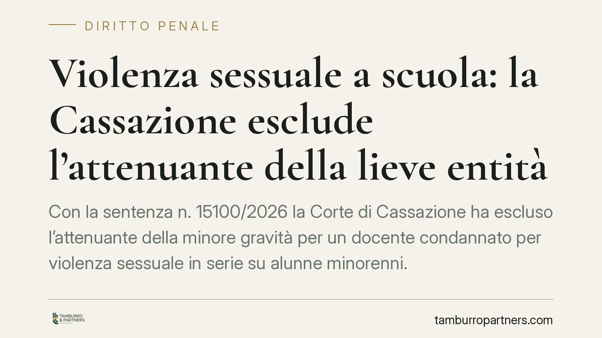
Violenza sessuale a scuola: la Cassazione esclude l'attenuante della lieve entità
Con la sentenza n. 15100/2026 la Corte di Cassazione ha escluso l'attenuante della minore gravità per un docente condannato per violenza sessuale in serie su alunne minorenni. La d…

Alcoltest e lingua dell'automobilista: il diritto all'interprete nelle zone bilingui
Un orientamento giurisprudenziale valorizza il diritto dell'automobilista a comprendere gli atti del controllo stradale, specie nelle province bilingui come Bolzano. Quando l'accer…
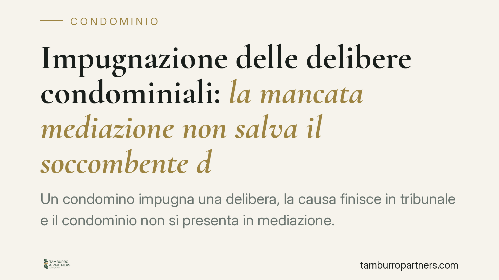
Impugnazione delle delibere condominiali: la mancata mediazione non salva il soccombente dalle spese
Un condomino impugna una delibera, la causa finisce in tribunale e il condominio non si presenta in mediazione. Chi perde deve comunque pagare le spese? La regola generale è chiara…
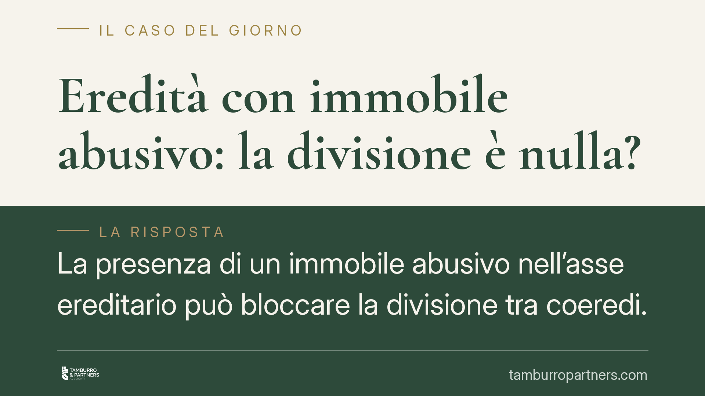
Eredità con immobile abusivo: la divisione è nulla?
La presenza di un immobile abusivo nell'asse ereditario può bloccare la divisione tra coeredi. Le Sezioni Unite della Cassazione hanno fissato i confini della nullità degli atti di…
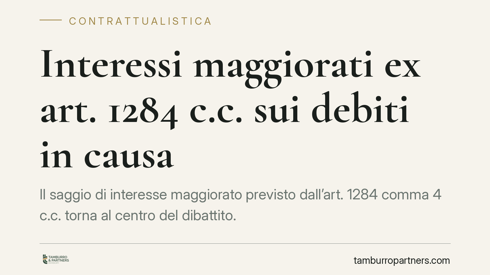
Interessi maggiorati ex art. 1284 c.c. sui debiti in causa
Il saggio di interesse maggiorato previsto dall'art. 1284 comma 4 c.c. torna al centro del dibattito. Una pronuncia recente, citata nelle cronache giuridiche ma della quale va veri…

Mutuo cointestato e separazione: chi paga può chiedere il rimborso?
Quando una coppia si separa resta spesso un nodo pratico: il mutuo cointestato. Se uno solo dei coniugi continua a pagare le rate, può pretendere la metà dall'altro? La risposta ca…

Testamento olografo smarrito: vale ancora o è revocato?
Un testamento scritto a mano dal defunto, ma mai ritrovato dopo il decesso. Vale ancora o si considera cancellato? Il Tribunale di Firenze (sent. 2762/2026) conferma che l'irreperi…

Violazioni del regolamento condominiale: risponde il proprietario per l'inquilino?
Chi concede in locazione un immobile in condominio resta esposto verso gli altri condomini se l'inquilino viola il regolamento. La giurisprudenza di merito conferma un dovere di vi…
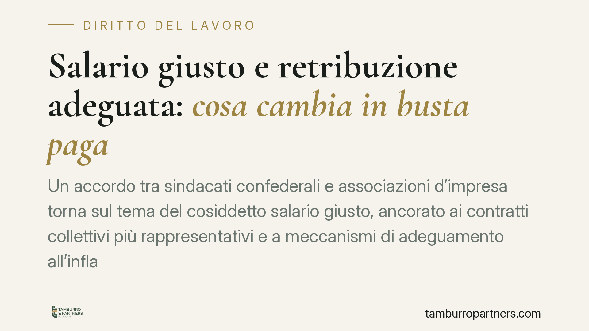
Salario giusto e retribuzione adeguata: cosa cambia in busta paga
Un accordo tra sindacati confederali e associazioni d'impresa torna sul tema del cosiddetto "salario giusto", ancorato ai contratti collettivi più rappresentativi e a meccanismi di…

Distacco dal riscaldamento centralizzato: quando il condomino paga comunque le spese
Chi si distacca dall'impianto di riscaldamento centralizzato non sempre si libera dei relativi oneri. Con la sentenza 6618/2026 la Cassazione ribadisce che una clausola del regolam…

Acconto e preliminare di vendita: quando la clausola a favore del costruttore è nulla
Chi firma un preliminare per l'acquisto di casa versa quasi sempre una somma anticipata. Ma se poi non conclude, il costruttore può trattenere tutto? La questione tocca la discipli…

Comodato familiare e locazione: i suoceri non possono aggirare l'assegnazione della casa
Il Tribunale di Castrovillari (sent. 642/2026) ha dichiarato nullo il contratto di locazione con cui i suoceri, proprietari dell'immobile, lo hanno affittato al solo figlio quando …
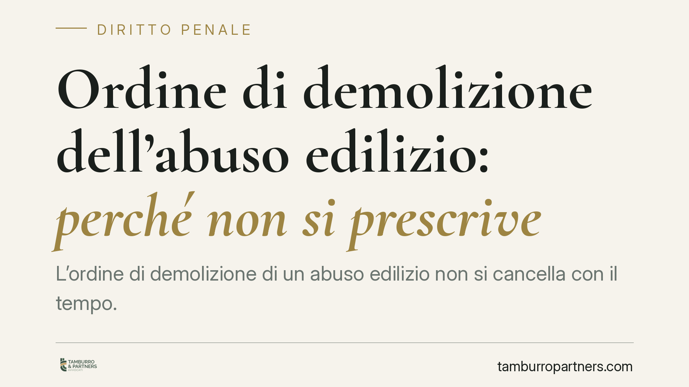
Ordine di demolizione dell'abuso edilizio: perché non si prescrive
L'ordine di demolizione di un abuso edilizio non si cancella con il tempo. Secondo recenti pronunce della Cassazione penale, ha natura reale e ripristinatoria: non è una pena, segu…
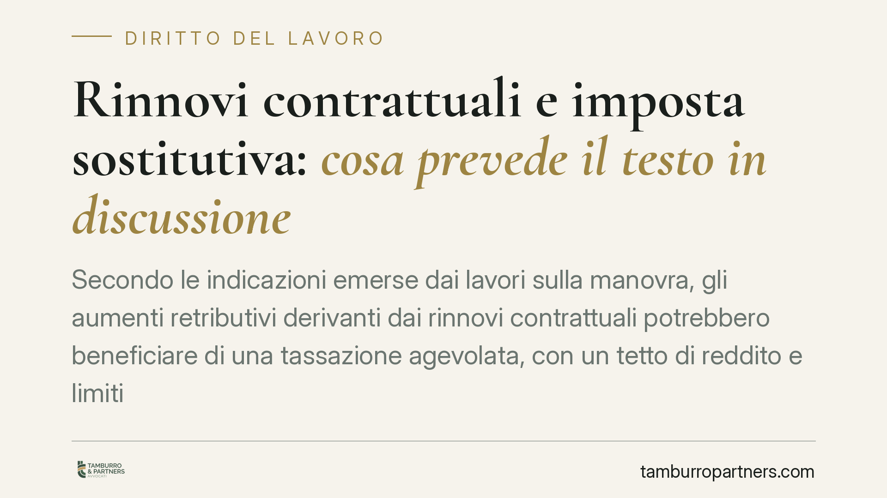
Rinnovi contrattuali e imposta sostitutiva: cosa prevede il testo in discussione
Secondo le indicazioni emerse dai lavori sulla manovra, gli aumenti retributivi derivanti dai rinnovi contrattuali potrebbero beneficiare di una tassazione agevolata, con un tetto …
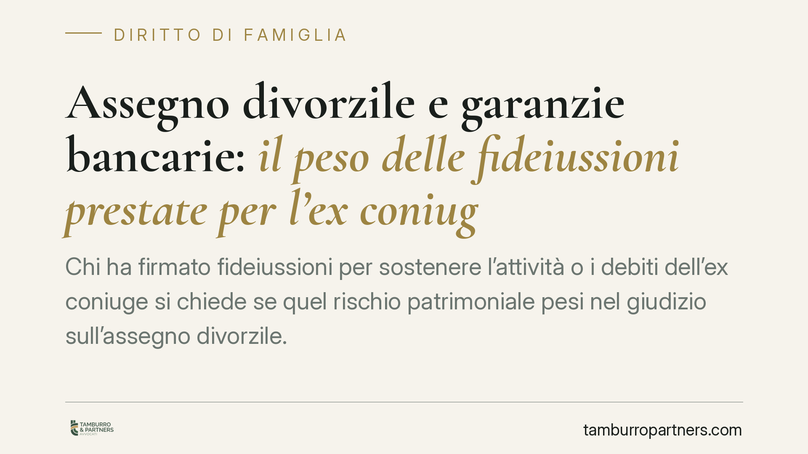
Assegno divorzile e garanzie bancarie: il peso delle fideiussioni prestate per l'ex coniuge
Chi ha firmato fideiussioni per sostenere l'attività o i debiti dell'ex coniuge si chiede se quel rischio patrimoniale pesi nel giudizio sull'assegno divorzile. Il tema tocca la co…